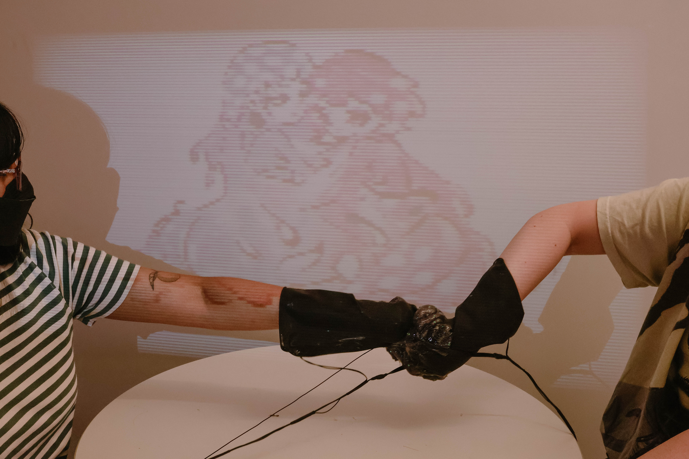

Thesis · HCI RESEARCH | EMBODIED INTERACTION | PHYSICAL COMPUTING | PARSONS FEATURED
Slimeship
A two-player audiovisual installation that explores friendship dynamics through embodied interaction, using slime as a physical metaphor for intimacy and tension.